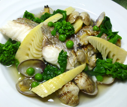

真鯛とアサリの
あんかけスープ
あんかけスープ
- 調理時間：30 分
- （一人当たり）
- カロリー：200kcal
- たんぱく質：24.1g
- 脂質：5.0g
- 塩分：2.1g


＜２人分＞
- 真鯛
- 2切
- アサリ（殻つき）
- 400g
- タケノコ（ゆで）
- 60g
- グリンピース
- 大さじ2
- 菜花
- 60g
- だし汁
- 300ml
- みりん
- 小さじ2
- 薄口醤油
- 小さじ2
- 塩
- 少々
- 水溶き片栗粉
- 小さじ4
※水小さじ２、片栗粉小さじ２


- 真鯛の切り身に軽く塩をふり、皮に焼き色がつくように焼く。
- タケノコは下ゆでしてクシ切りにする。グリンピースは塩をまぶして熱湯でゆでる。
菜花はサッと湯がいて3㎝長さに切る。 - アサリは殻をこすりあわせてよく洗う。
- 鍋にだし汁を入れて火にかけ、アサリを加え、アサリのフタが空くまで火を通す。
- あんかけスープをつくる。
ゆでたタケノコ、グリンピースを加えてみりん、薄口醬油、塩で味をととのえ、水溶き片栗粉でとろみをつける。火を止める直前にゆでた菜花を加える。 - 焼いた真鯛の上に、⑤のあんかけスープをかけて出来上がり。
真鯛とアサリのあんかけスープ
植物が芽吹く春。新しい環境になり、知らず知らずのうちにストレスをため込みやすい季節です。
また、この時期は冬にため込んだ脂肪を外に出しながら体調をととのえていきたいものです。
こんなときに役立つ栄養素にタウリンがあります。タウリンはアサリやイカ、タコに多く含まれる栄養素ですが、神経伝達物質の調整役として交感神経を抑制するはたらきがあるため、イライラを沈めます。さらに体内のタウリン量が満たされていると、神経伝達物質がうまく利用されるため脳がスッキリした状態になります。その他、旬食材の菜花は独特のえぐみやほろ苦さがあり、食物繊維はデトックスを促します。ココロもカラダもリフレッシュして、新たな季節をむかえられるとよいですね。